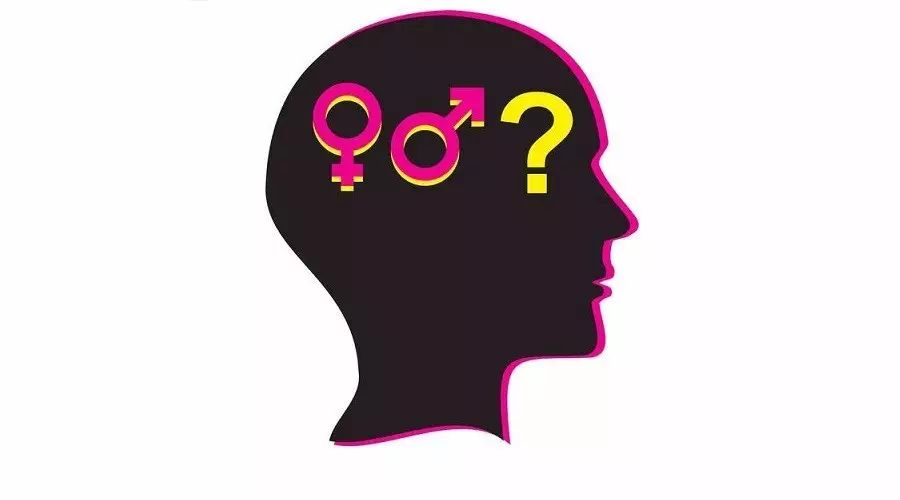

棱镜 | 代词与特权
有些时候，我们会因为是“大多数”而在不经意间忘记了还有相对少数的人群存在；或者即使想起来了，也并不重视他们。而当有人提出要照顾少数群体时，我们又常常觉得TA们太过“小题大做”或“激进”。下面这个关于“我的朋友S”的故事也许会带给你一些启发。

六年前刚进入大学还是萌新的我第一次参加直同联盟茶话会，在自我介绍的环节就因一个问题感到措手不及。“Tell us your name, where you are from, and your preferred pronoun.” (告诉大家你的名字，来自哪里，以及偏好的人称代词。)并不擅长语法的我第一反应就是人称代词是个什么鬼，和自我介绍有关系吗？但到场的其他同学们都非常郑重地一一介绍了自己的人称代词——“he”或是“she”。印象当中这场茶话会除了曲奇很好吃外并没有什么有趣的活动，而且还和主机游戏对战之夜冲突了，于是就再也没有去过。第二次这么郑重地被要求介绍自己的人称代词是在大二下的辩论赛上。主办学校的主席团认为本着对于跨性别群体以及拒绝二元性别划分人群的尊重，在每场辩论开始前裁判应要求各位辩手讲明自己偏好的人称代词。于是每轮比赛前房间里紧张的准备时间里总会出现微妙的一两秒寂静，直到裁判似乎忽然意识到自己的遗漏，“哦哦，偏好的人称代词，各位？”然后埋头备稿的人们嘴里蹦出短促的“he”,“she”，多少夹杂着不耐烦的愤懑。

比赛结束后的当晚，一群喝得微醺的辩手被关在酒店房间里自然是少不了高谈阔论的。“不是只有我一个人对于这项人称代词的规定感到不舒服吧？”在例行交流完各自的成绩后，我挑起了话题。“这一规定感觉毫无必要，既浪费准备时间，又让人感到不爽。”
“那是因为你享受着他人所没有的特权(privilege)。”S同学熟知各类社会运动背后的理论支持，酒精更是能让行走的百科全书变成行走的广播电台，“你是一个顺性别者(cis-gender)，或许不能够理解跨性别者在他人误用人称代词时受到的伤害。让每个人讲明自己偏好的人称代词既照顾了性少数群体的感受，而且能够提醒顺性别人群检视自己的特权。”
“等等，为什么大家都说出自己的人称代词就能照顾到跨性别人群的感受了？还有特权是什么？”和S搭档过的我非常乐意为她搭起表演的舞台，而且学习一些新理论总是好的。
“因为跨性别群体长期遭受着语言上的微暴力(micro-aggression)，就是他人罔顾他们意愿地去称呼他们。”S同学皱着眉，甚至放下了手里的酒杯，“而特权就是那些不会被微暴力骚扰的人们所拥有的，因为他们没有生在社会不公里弱势的一方。除了顺性别以外，作为白人，作为男性，都有其对应的特权。正是因为他们从未检视过自己的特权，所以总是随心所欲地通过言语暴力伤害其他群体。”
“然后呢？检视完自己的特权后要做什么呢？”我一边问一边试着检视自己过去享受到的特权——比如每次发出这样恼人的追问还不被嫌弃是作为外来人员的特权么？
“他们应该意识到自己在施暴，改变自己的语言。”S的语气如此坚定，仿佛这是理所应当的。
或许我不该用上仿佛这个词，对于S而言要求自己言行尊重他人是天经地义的，即使被关照的人无动于衷。刚认识没多久的时候，在派对上遇到了微醺的S，她问我，“遇到感兴趣的姑娘了吗？”“这可难了，”我撇了撇嘴，补充到，“我是基佬呀。”S听后表情忽然认真了起来“我很抱歉假设了你的性取向。”喝醉的人努力集中精神的模样总是有些好笑，但S的郑重其事还是让我有些感动。高中就已经出柜的我，早已习惯他人疑惑和不解，解释的套路也已熟烂于心。出柜仿佛是游戏中的开始键，按下之后便是无尽抗争的征途，每一次解释后都会觉得进一步加强了自己的“自我认知”，犹如自己的角色升了一级般而暗暗高兴。但在S郑重的道歉前，我从未想过作为性少数的人生并非必须是场抗争，不用想着处处抢得先手，向他人彰显自己不可动摇。出柜后并不必然是各种各样的争论，出柜前也不需要成为半个社会学家——生为少数并非错误，不必为此向他人辩白解释。如果世界上有更多像S这样的人，或许对我来社会可能更像模拟养成类游戏而非现在的即时战略。

但S并不是个受人欢迎的同学。她主持的每个活动都会要求参与者说明自己偏好的人称代词；对话时她会毫不留情地指出你言语间对于少数群体即使是无意的冒犯；脸书的学校社区的留言墙上总有她纠正别人发言或是陷入争论的身影。我有时候也不愿和其他朋友承认我和S是朋友——她看起来确实有些疯狂。而有些时候我会觉得她简直就是在教育我怎么当个基佬，相比之下社会上冷漠而不敏感的人至少不会那么烦人。她或许未曾意识到她照顾少数群体的能力本身就源于一个白人中产家庭出生的大学精英女性所拥有的特权；而每次她运用那一连串的社会学人类学术语介绍着酷儿理论进行着社会批判，理解与尊重少数人群这件事看起来有着极高的知识壁垒，让人望而却步；而有这样的保护伞型角色存在，少数群体也永远不会觉得有必要依靠自己与压迫和歧视交锋从而成长。当我终于想清自己的逻辑并向S论述了观点，她歪了歪脑袋：“你依然没有意识到你的特权——不是所有人都有机会有能力像你一样‘成长’的”她随后又笑了，“两个SJW互斥对方的特权真是搞笑。”
Social Justice Warrior(社会正义战士)，我第一次听到这一中二的名称时并未理解当中的讽刺意味，但若是让现在的我来翻译应该称其为白左键盘侠吧。S常常用SJW这词自嘲，她觉得这词至少比Political Correctness Police(政治正确警察)要好听，“战士至少听起来不属于现有压迫机制的一部分。”她随后又补充了一句：“你知道在多数人眼里你我其实都是SJW吧！”这倒是一点不错，在享受着现有社会价值体系不希望看到社会有任何改变的人看来，指出任何问题都是无病呻吟，期待任何改变都是痴人说梦，付诸任何行动都是居心叵测，哪里还在意激进或温和那一点细微的差异。

毕业之后，我再未联系过S，也不再被要求说明自己偏好的人称代词——我一点也不想念这个过程。但每当有人为了少数群体的权益而疾呼却被斥为激进变态时，我会想到S。即使有时我会希望她不要自作主张代替我去战斗——我们对于目标和方法的理解皆不尽相同——但我很高兴曾经有过这样的战友。